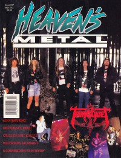

Tourniquet
|  |
| September 1992 Heaven's Metal |
 |
| September 1994 Heaven's Metal |
 |
| January 2000 HM |
 |
| September 2012 HM |
Media coverage:
- Sep 1990 in CCM "New Faces: Knot Tied Down", by Erin McNamara
- Sep 1990 in Heaven's Metal "Fresh Metal: Ted Kirkpatrick of Tourniquet", by Doug Van Pelt
- Jul 1991 in Harvest Rock Syndicate "Tapping The Underground: Medicine For Your Head", by Randy S Rocker
- Sep 1991 in Heaven's Metal "Entering The Psycho Surgery Ward", by Doug Van Pelt
- May 1992 in Heaven's Metal "Psychoanalyzing Tourniquet", by Miss Erin
- Sep 1992 in Heaven's Metal "Untwisting Tourniquet", by David S. Hart
- Nov 1992 in Heaven's Metal "Concert Review: Tourniquet", by Anthony Scott
- Mar 1993 in Syndicate "Improving Circulation", by Jamie Lee Rake
- Sep 1993 in Heaven's Metal "Concert Review: Tourniquet", by Lane A. Davis
- May 1994 in Heaven's Metal "Poster: Tourniquet (Gary Lenaire)"
- Jul 1994 in Heaven's Metal "Poster: Tourniquet"
- Sep 1994 in Heaven's Metal "On The Road With Tourniquet: Home Sweet Motorhome", by Doug Van Pelt
- Mar 1995 in Heaven's Metal "Concert Review: Tourniquet, Precious Death", by Pastor Fred Z.
- May 1995 in Heaven's Metal "Doing Something Different", by Brent Hershey
- Jan 1997 in HM "The Test For Sanity...", by Doug Van Pelt
- Jul 1997 in HM "Poster: Tourniquet"
- Mar 1998 in 7ball "Tourniquet", by Dan MacIntosh
- Mar 1999 in HM "Acoustically Minded", by Chad Olson
- Jan 2000 in HM "Seeing Past The Trees", by Dan MacIntosh
- Mar 2000 in HM "Poster: Tourniquet"
- Jan 2002 in HM "Classic Moments: Tourniquet", by Doug Van Pelt
- Mar 2003 in HM "Tourniquet", by Matt Morrow
- Aug 2007 in Heaven's Metal "Metal Tracks: Guy Ritter: Tourniquet, Holy Danger, Echo Hollow"
- May 2010 in HM "Classic Moments: Tourniquet", by Doug Van Pelt
- Jul 2010 in HM "Tourniquet", by Doug Van Pelt
- Sep 2012 in HM "Taking a Bloodbath", by Jeff McCormack
- Feb 2018 in Metalbreed "Latido Extremo: Tourniquet", by David Sanchez
Albums & reviews:
1990: Stop The Bleeding
2000: Microscopic View of a Telescopic Realm
- Jun 1990 in Heaven's Metal, by Doug Van Pelt
- Sum 1990 in Harvest Rock Syndicate, by Kevin Allison
- Aug 1990 in CCM, by Brian Quincy Newcomb
- Nov 1990 in Campus Life
- Jul 1991 in Harvest Rock Syndicate, by Kevin Allison
- Sep 1991 in CCM, by Doug Van Pelt
- Sep 1991 in Heaven's Metal, by Stephen Wagers
- 1992 in Cornerstone, by David Canfield
- Spr 1992 in YouthWorker, by Steve Rabey
- Apr 1992 in Campus Life, by Jim Long
- Nov 1992 in Campus Life, by Jim Long
- Jan 1993 in Heaven's Metal, by Doug Van Pelt
- Jan 1993 in Syndicate, by Arsenio Orteza
- Feb 1993 in CCM, by Jamie Lee Rake
- 1993 in Cornerstone, by David Canfield
- Sum 1993 in YouthWorker, by Steve Rabey
- May 1992 in Heaven's Metal, by Doug Van Pelt
- Mar 1993 in Syndicate, by Kevin Allison
- May 1993 in Heaven's Metal, by Doug Van Pelt
- Sep 1994 in Heaven's Metal, by Doug Van Pelt
- Oct 1994 in Syndicate, by Dutch Smiles
- Mar 1995 in Heaven's Metal, by Doug Van Pelt
- Mar 1995 in Heaven's Metal, by Doug Van Pelt
- Jul 1996 in HM, by Brian Vincent McGovern
- Sep 1997 in HM, by Brian Vincent McGovern
- Nov 1997 in CCM, by Paul Grimshaw
- Jan 1998 in 7ball, by Mike Parker
- Mar 1998 in YouthWorker, by Garth Heckman
2000: Microscopic View of a Telescopic Realm
- Mar 2000 in HM, by Doug Van Pelt
- May 2000 in YouthWorker, by Dave Urbanski
- Jul 2000 in 7ball, by Dan MacIntosh
- Mar 2003 in HM, by Chad Olson
- May 2003 in YouthWorker, by Dave Urbanski
- Dec 2006 in Heaven's Metal, by Chad Olson
- Apr 2009 in Heaven's Metal, by Chris Gatto
- Sep 2012 in HM, by Kevin Crothers
- Oct 2012 in Heaven's Metal, by Kevin Crothers
- May 2013 in Heaven's Metal, by Chris Gatto
- Jun 2017 in Metalbreed, by Andrea Aponte R
- Jan 2019 in Metalbreed, by Johnny Gonzäles
Award Summary (Nominations / Wins)
Dove Awards- 1991 Dove Awards
- Metal Album: Stop The Bleeding
- Metal Recorded Song: "You Get What You Pray For"
- Metal Album: Vanishing Lessons
- Metal Recorded Song: "Bearing Grusome Cargo"
Books about Tourniquet
- "Tourniquet" in The Encyclopedia of Contemporary Christian Music (Mark Allan Powell, 2002)

© 2011 CMnexus. Last updated September 2019. Contact: editor -AT- cmnexus -DØT- org About